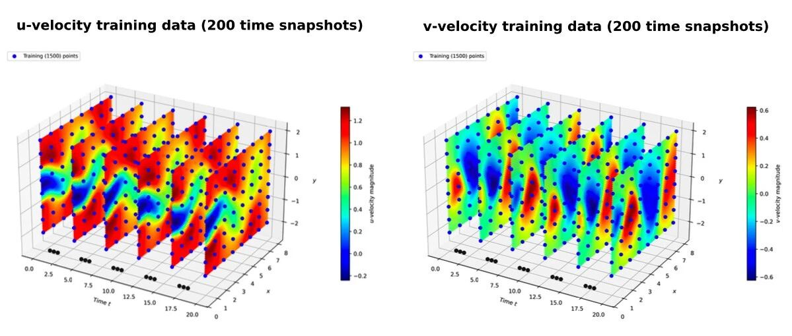
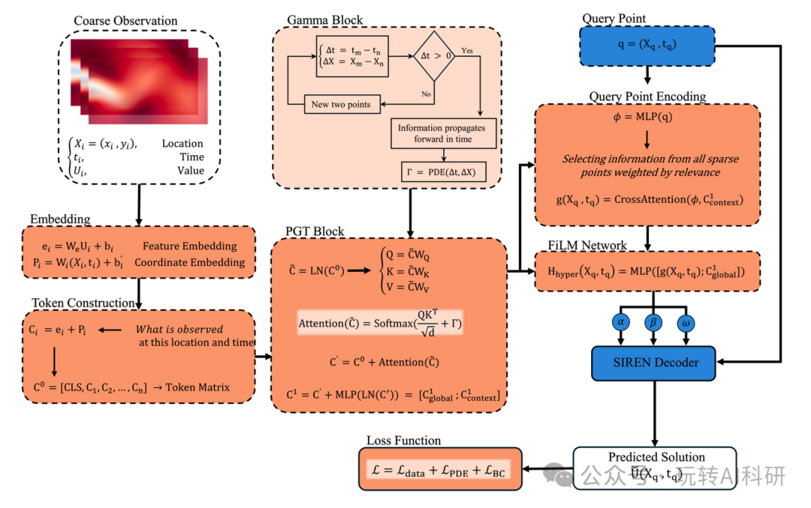
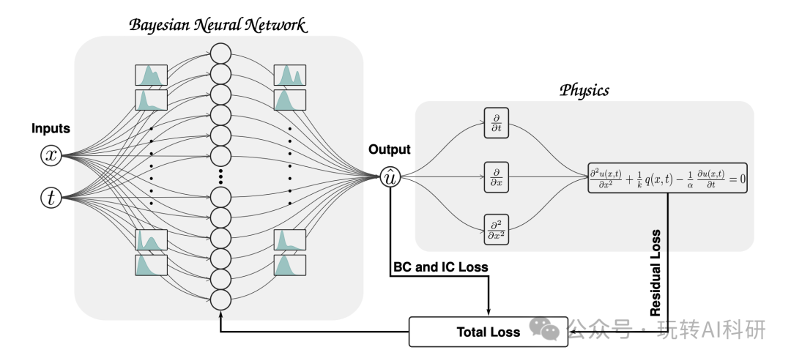
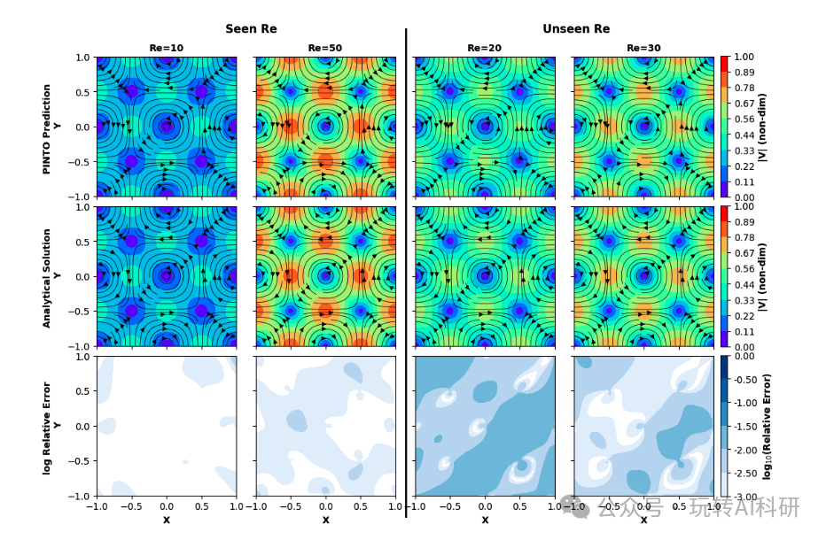
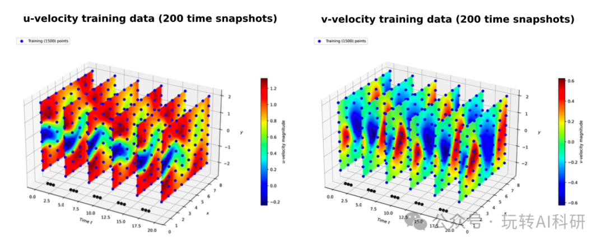
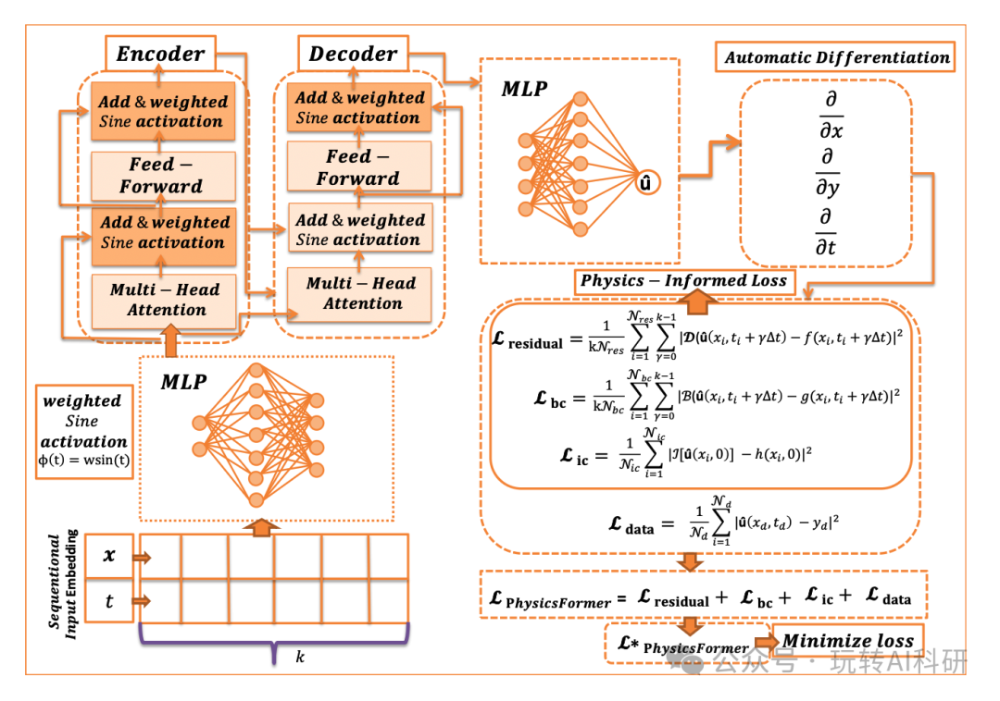
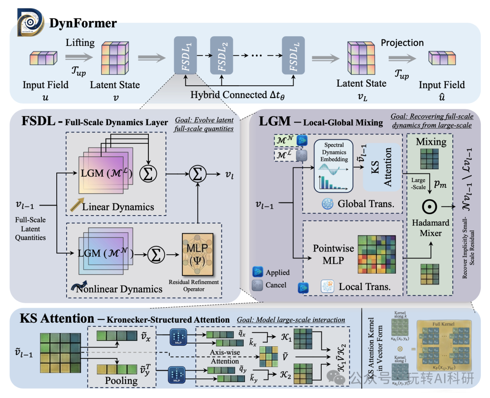

📑来源信息
抓取方式
Playwright Headless + mmbiz图片直链提取
文章ID
ARC-20260423-002
抓取状态
✓ 完整归档
📝核心内容摘要
核心内容摘要
课题名称
Transformer与物理信息神经网络（PINN）深度融合：AI驱动科学计算新范式研究背景与痛点
PINN（物理信息神经网络）将偏微分方程（PDE）作为软约束嵌入网络损失函数，在科学计算领域展现了强大潜力。然而传统基于MLP的PINN存在两大核心瓶颈：①对复杂时空依赖建模能力不足，难以捕捉湍流、扩散等高维问题的长期时序特征；②梯度失衡问题严重，多物理场耦合时各损失项相互干扰，训练不稳定、收敛困难。与此同时，Transformer架构在自然语言处理领域证明了其卓越的序列建模能力，但其与物理约束的深度融合尚处早期探索阶段。解决方案：Transformer-PINN融合路线
围绕"将Transformer的长距离建模能力引入物理信息学习"这一核心，涌现了多条技术路线：| 方法 | 核心思路 | 关键创新 |
|---|---|---|
| PGT | 将物理格林函数推导为注意力偏置项，直接嵌入注意力计算 | 编码物理因果性至表示层，从根本上解决梯度失衡 |
| B-PINN | 变分推断+贝叶斯框架量化认知不确定性 | 提供置信区间，解决数据稀缺时可靠性问题 |
| PINTO | 交叉注意力迭代核积分算子，无仿真数据训练 | 边界条件泛化能力突出，时间外推是独有特性 |
| PhysicsFormer | 序列化学习+多头交叉注意力捕捉时变流场 | 加权正弦激活函数增强高频特征，计算速度提升3倍 |
| DynFormer | 尺度分解+克罗内克结构注意力降复杂度 | O(N⁴)→O(N³)，95%相对误差降低，突破高分辨率PDE求解瓶颈 |
科学与工程价值
- 理论层面：为Transformer架构与物理先验的深度融合提供了系统性框架，推动神经算子理论发展 - 应用层面：覆盖流体力学（NS方程）、热扩散、湍流建模、气候预测等关键场景，支撑工程仿真加速 - 工程价值：稀疏数据下仍保持高精度，为实验数据稀缺的风电、航空发动机等高端制造场景提供可落地AI工具📄完整文章截图图集
共9页 · 含原文图片
1第1页

2第2页

3第3页

4第4页

5第5页

6第6页

7第7页
🖼完整截图存档
包含完整页面截图、原始图片及元数据。图片为原文内容的完整备份。